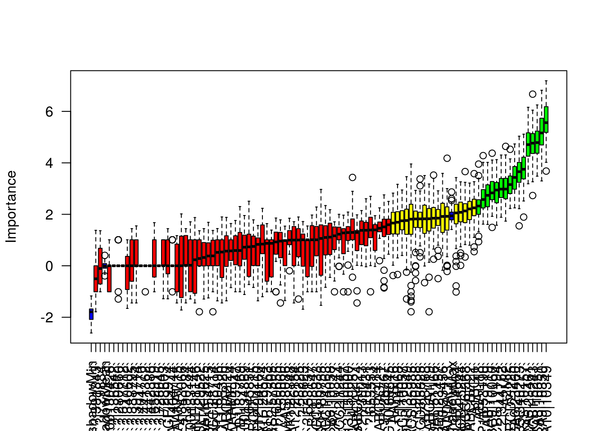

Selekcja zmiennych - kilka przykładów
FSelector - information.gain
library(RTCGA.rnaseq)
library(dplyr)
BRCA.rnaseq %>%
mutate(bcr_patient_barcode = substr(bcr_patient_barcode, 14, 14)) -> BRCA.rnaseq.tumor
BRCA.rnaseq.tumor.first<-BRCA.rnaseq.tumor[, 1:1000]
(sum(BRCA.rnaseq.tumor.first$bcr_patient_barcode==0)) #1100 guz ## [1] 1100(sum(BRCA.rnaseq.tumor.first$bcr_patient_barcode==1)) #112 zdrowy## [1] 112library(FSelector)
information.gain(formula =bcr_patient_barcode~., data = BRCA.rnaseq.tumor.first)->wynik.info
wynik.info %>%
mutate(nazwy = row.names(wynik.info)) %>%
arrange(desc(attr_importance)) -> wyniki.po.info
(subset<- cutoff.biggest.diff(wynik.info))## [1] "ADAMTS5|11096" "ARHGAP20|57569"(subset) ##geny o najbardziej wyróżniającym się wskaźniku attr_imprortance## [1] "ADAMTS5|11096" "ARHGAP20|57569"(subset11<-cutoff.k(wynik.info,10))## [1] "ADAMTS5|11096" "ARHGAP20|57569" "ABCA10|10349" "ABCA9|10350"
## [5] "ALDH1A2|8854" "ABCA8|10351" "ADRB2|154" "ABCA6|23460"
## [9] "ANKRD29|147463" "AQP7P1|375719"Boruta - Boruta
library(Boruta)
invisible(
Boruta_model <- Boruta(as.factor(bcr_patient_barcode)~.,
data = BRCA.rnaseq.tumor.first[,1:100],
doTrace =2, ntree = 50)
)## 1. run of importance source...## 2. run of importance source...## 3. run of importance source...## 4. run of importance source...## 5. run of importance source...## 6. run of importance source...## 7. run of importance source...## 8. run of importance source...## 9. run of importance source...## 10. run of importance source...## 11. run of importance source...## 12. run of importance source...## 13. run of importance source...## 14. run of importance source...## Confirmed 11 attributes: `A2M|2`, `AADACL2|344752`, `AASS|10157`, `ABCA10|10349`, `ABCA5|23461` and 6 more.## Rejected 34 attributes: `?|100130426`, `?|100133144`, `?|100134869`, `?|136542`, `?|26823` and 29 more.## 15. run of importance source...## 16. run of importance source...## 17. run of importance source...## 18. run of importance source...## Rejected 12 attributes: `?|390284`, `?|729884`, `AAAS|8086`, `AADACL4|343066`, `ABCA11P|79963` and 7 more.## 19. run of importance source...## 20. run of importance source...## 21. run of importance source...## 22. run of importance source...## Confirmed 1 attributes: `ABCC9|10060`.## Rejected 1 attributes: `A2BP1|54715`.## 23. run of importance source...## 24. run of importance source...## 25. run of importance source...## Confirmed 2 attributes: `ABCB8|11194`, `ABCC6P1|653190`.## Rejected 1 attributes: `ABCC1|4363`.## 26. run of importance source...## 27. run of importance source...## 28. run of importance source...## Confirmed 1 attributes: `AAGAB|79719`.## Rejected 3 attributes: `?|10357`, `ABCA7|10347`, `ABCC8|6833`.## 29. run of importance source...## 30. run of importance source...## 31. run of importance source...## Rejected 5 attributes: `?|10431`, `A2ML1|144568`, `ABCA3|21`, `ABCB6|10058`, `ABCC6P2|730013`.## 32. run of importance source...## 33. run of importance source...## 34. run of importance source...## Rejected 2 attributes: `?|645851`, `?|653553`.## 35. run of importance source...## 36. run of importance source...## 37. run of importance source...## Rejected 1 attributes: `A4GALT|53947`.## 38. run of importance source...## 39. run of importance source...## 40. run of importance source...## 41. run of importance source...## 42. run of importance source...## 43. run of importance source...## Rejected 2 attributes: `AACS|65985`, `ABCC2|1244`.## 44. run of importance source...## 45. run of importance source...## 46. run of importance source...## Rejected 1 attributes: `AARSD1|80755`.## 47. run of importance source...## 48. run of importance source...## 49. run of importance source...## Rejected 2 attributes: `?|155060`, `AADACL3|126767`.## 50. run of importance source...## 51. run of importance source...## 52. run of importance source...## 53. run of importance source...## 54. run of importance source...## 55. run of importance source...## 56. run of importance source...## 57. run of importance source...## 58. run of importance source...## 59. run of importance source...## 60. run of importance source...## 61. run of importance source...## 62. run of importance source...## 63. run of importance source...## 64. run of importance source...## 65. run of importance source...## 66. run of importance source...## 67. run of importance source...## Confirmed 1 attributes: `A1BG|1`.## 68. run of importance source...## 69. run of importance source...## 70. run of importance source...## 71. run of importance source...## 72. run of importance source...## 73. run of importance source...## Confirmed 1 attributes: `ABAT|18`.## Rejected 1 attributes: `ABCC4|10257`.## 74. run of importance source...## 75. run of importance source...## 76. run of importance source...## 77. run of importance source...## 78. run of importance source...## Rejected 1 attributes: `?|90288`.## 79. run of importance source...## 80. run of importance source...## Confirmed 1 attributes: `ABCB7|22`.## 81. run of importance source...## 82. run of importance source...## 83. run of importance source...## 84. run of importance source...## 85. run of importance source...## 86. run of importance source...## 87. run of importance source...## 88. run of importance source...## 89. run of importance source...## 90. run of importance source...## 91. run of importance source...## 92. run of importance source...## 93. run of importance source...## Rejected 1 attributes: `ABCC10|89845`.## 94. run of importance source...## 95. run of importance source...## 96. run of importance source...## 97. run of importance source...## 98. run of importance source...## 99. run of importance source...plot(Boruta_model, las=2, xlab="")
# plotImpHistory(Boruta_model)
# getSelectedAttributesRegresja logistyczna z regularyzacją
- glmnet poprzez regularyzację sam dobiera odpowiednie parametry
library(glmnet)
model_glmnet <- glmnet(x = as.matrix(BRCA.rnaseq.tumor.first[, -1]),
y = as.factor(BRCA.rnaseq.tumor.first[,1]),
family="binomial",
alpha = 0, lambda.min = 1e-4)
nsteps <- 10
b1 <- coef(model_glmnet)[-1, 1:nsteps]
w <- nonzeroCoef(b1)
b1 <- as.matrix(b1[w, ])
matplot(1:nsteps, t(b1), type = "o", pch = 19,
col = "blue", xlab = "Step",
ylab = "Coefficients", lty = 1)
title("Lasso")
abline(h = 0, lty = 2)